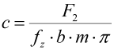
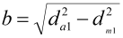
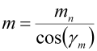

|
|
|


根据 Hoechst 的强度计算
您可以将 Hoechst 强度计算用于由 Hostaform® (POM) 制成的、与钢制蜗杆配对的蜗轮 [53]。许用载荷系数 c [N/mm2]（见公式 (18.1) ÷ (18.3)）是定义耐温性的值。该方法还检查蜗杆的许用接触应力和自锁安全性。自锁安全性的决定性值是最大载荷，而非连续载荷。
|  | (18.1) |
|  | (18.2) |
|  | (18.3) |
其中
| F2 | 蜗轮上的圆周力 |
| fz | 齿数系数 |
| b | 可用齿宽 |
| mn | 法向模数 |
| γm | 平均导程角 |
| da1 | 蜗杆齿顶圆直径 |
| dm1 | 蜗杆分度圆直径 |
注意：
轴交角 Σ = 90°，且 z1 < 5。该计算方法涉及钢制蜗杆和塑料制交叉斜齿轮。
Strength calculation according to Hoechst
You can use the strength calculation in acc. with Hoechst for worm wheels made from Hostaform® (POM), paired with steel worm gears [53]. The permitted load coefficient is c [N/mm2] See equation (18.1) ÷ (18.3), is a value that defines the temperature resistance. This method also checks the worm's permissible contact stress and blocking safety. The decisive value for blocking safety is maximum load, not continuous load.
| (18.1) | |
| (18.2) | |
| (18.3) |
where
| F2 | Circumferential force on the worm wheel |
| fz | Coefficient for number of teeth |
| b | Usable width |
| mn | Normal module |
| γm | Mean lead angle |
| da1 | Tip diameter of worm |
| dm1 | Reference diameter of worm |
Note:
Axial crossing angle Σ = 90° and z1 < 5. The calculation method involves a worm made of steel and a crossed helical gear made of plastic.